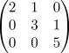

LinAlg 1 - extra wahr / falsch Aufgaben - misc
Warnung
Ich habe 30 Fragen erstellt und wurde gebeten, mehr Fragen aufzuschreiben.
Ich glaube dass diese Fragen eher schwieriger sind als typische wahr / falsch fragen in der Klausur. Auf jeden Fall gibt es hier einige wahr / falsch aufgaben, die zu schwer wären.
Liste
Mengen
Seien $A,B,C,D$ Mengen.
i)
Dann existiert eine Abbildung $f: A \rightarrow B$
ii)
Es gilt $A \setminus (A \setminus B) = B$
iii)
Es gilt $(A \cap B) \times (C \cap D) = (A \times C) \cap (B \times D)$
iv)
Eine injektive Abbildung $f: \{1,2,3\} \rightarrow \{1,2,3\}$ ist immer surjektiv.
v)
Die Projektion
ist surjektiv.
vi)
Eine konstante Abbildung $f: A \rightarrow B$ (für $\vert B \vert \geq 1$) ist nie injektiv.
vii)
Es existieren Mengen $A_1,A_2,A_3$ und surjektive Abbildungen $A_1 \twoheadrightarrow A_2, A_2 \twoheadrightarrow A_3$ so dass die Komposition
injektiv ist.
viii)
Sei $f: A \rightarrow B$ eine Abbildung und $U \subseteq A$. dann folgt $f^{-1}[f[U]] = U$
ix)
Sei $f: A \rightarrow B$ eine Abbildung und $U \subseteq B$. dann folgt $f[f^{-1}[U]] = U$
x)
Seien $f: X \rightarrow Y, g: Y \rightarrow Z$ surjektive Abbildungen. Dann ist auch $g \circ f$ surjektiv
xi)
Seien $f: X \rightarrow Y, g: Y \rightarrow Z$ injektive Abbildungen zwischen endlichen Mengen. Dann ist auch $g \circ f$ injektiv
xii)
Seien $f: X \rightarrow Y, g: Y \rightarrow Z$ injektive Abbildungen. Dann ist auch $g \circ f$ injektiv
xiii)
Seien $f: X \rightarrow Y, g: Y \rightarrow Z$ Abbildungen so dass $g \circ f$ injektiv ist. Dann ist auch $f$ injektiv
xiv)
Seien $f: X \rightarrow Y, g: Y \rightarrow Z$ Abbildungen so dass $g \circ f$ injektiv ist. Dann ist auch $g$ injektiv
xv)
Seien $f: X \rightarrow Y, g: Y \rightarrow Z$ Abbildungen so dass $g \circ f$ surjektiv ist. Dann ist auch $f$ surjektiv
xvi)
Seien $f: X \rightarrow Y, g: Y \rightarrow Z$ Abbildungen so dass $g \circ f$ surjektiv ist. Dann ist auch $g$ surjektiv
xv)
Seien $f: X \rightarrow Y, g: Y \rightarrow Z$ Abbildungen so dass $g \circ f$ bijektiv ist. Dann ist auch $f$ bijektiv
xvi)
Seien $f: X \rightarrow Y, g: Y \rightarrow Z$ Abbildungen so dass $g \circ f$ bijektiv ist. Dann ist auch $g$ bijektiv
xvii)
Sei $\mathcal{P}(A)$ die Potenzmenge. Die Abbildung
ist bijektiv.
xviii)
Die Menge $\{1,1\} \subseteq \mathbb{N}$ enthält $2$ Elemente.
Gruppen
Seien $G,H$ Gruppen.
i)
Es existiert stets ein Gruppenhomomorphismus $\varphi: G \rightarrow H$
ii)
Es existiert eine Gruppe mit $7$ Elementen und einer Untergruppe mit $3$ Elementen.
iii)
für einen Körper $K$ ist die Gruppe $\mathrm{GL}_n(K)$ abelsch gdw. $n \leq 1$
iv)
Sei $G$ eine Gruppe und $U_1,U_2$ Untergruppen der Ordnung $2$. Dann folgt $U_1 = U_2$
v)
Sei $G$ eine Gruppe und $U_1,U_2$ Untergruppen der Ordnung $2$. Dann folgt $U_1 \cong U_2$, d.h. es existiert ein Gruppenisomorphismus $U_1 \cong U_2$
vi)
Sei $G$ eine Gruppe und $U_1,U_2$ Normalteiler, so dass ein Gruppenisomorphismus $U_1 \cong U_2$ existiert. Dann folgt $G/U_1 \cong G/U_2$
vii)
Es existiert eine Gruppe mit 2026 Elementen
viii)
Sei $K$ ein Körper, $G$ eine Gruppe und $\varphi: G \rightarrow K^{\times}$ ein Gruppenhomomorphismus. dann folgt $\{ghg^{-1}h^{-1} \vert g,h \in G\} \subseteq \mathrm{ker}(\varphi)$
ix)
Sei $\varphi: G \twoheadrightarrow H$ ein surjektiver Gruppenhomomorphismus. Ist $G$ abelsch, so auch $H$
x)
Sei $\varphi: G \twoheadrightarrow H$ ein surjektiver Gruppenhomomorphismus. Ist $H$ abelsch, so auch $G$
xi)
Sei $\varphi: G \hookrightarrow H$ ein injektiver Gruppenhomomorphismus. Ist $H$ abelsch, so auch $G$
xii)
Sei $\varphi: G \hookrightarrow H$ ein injektiver Gruppenhomomorphismus. Ist $G$ abelsch, so auch $H$
xiii)
Sei $\varphi: G \twoheadrightarrow H$ ein Gruppenisomorphismus Dann ist $G$ abelsch gdw. $H$ abelsch ist.
xiv)
Es existiert ein Normalteiler $N \trianglelefteq S_3$ mit $\vert N \vert = 2$
xv)
Je zwei Gruppen mit 4 Elementen sind Isomorph.
xvi)
Es gilt für $g,h \in G$ die Gleichung
xvii)
Für $g \in G$ gilt: $g^2 = e \Rightarrow g = e$
xviii)
Für $g \in G$ gilt: $g^2 = g \Rightarrow g = e$
xiv)
Es gilt für $g,h \in G$ die Gleichung
xv)
Es existieren element $g,h \in G \setminus \{e\}$ mit $g \cdot h = e$
xvi)
Sei $U \subseteq G$ eine Teilmenge, so dass gelte
- $1 \in U$
- $u_1,u_2 \in U \Rightarrow u_1 \cdot u_2 \in G$
Dann ist $U$ eine Untergruppe
xvii)
Sei $G$ abelsch und $U \subseteq G$ eine Teilmenge, so dass gelte
- $1 \in U$
- $u_1,u_2 \in U \Rightarrow u_1 \cdot u_2 \in G$
Dann ist Untergruppe
xviii)
Sei $G$ endlich und $U \subseteq G$ eine Teilmenge, so dass gelte
- $1 \in U$
- $u_1,u_2 \in U \Rightarrow u_1 \cdot u_2 \in G$
Dann ist Untergruppe
xix)
$(\mathbb{R}, \cdot)$ ist eine Gruppe.
xx)
Die Alternierende Gruppe $A_{16}$ hat eine Untergruppe mit $17$ Elementen.
xxi)
Es existiert ein Gruppenhomomorphismus $\mathbb{Z}/2 \mathbb{Z} \rightarrow \mathbb{Z}/3 \mathbb{Z}$ verschieden von der konstanten Nullabbildung.
xxii)
Seien $G,G'$ Gruppen, $U \subseteq G$ eine Untergruppe und $\varphi: U \rightarrow G'$ ein Gruppenhomomorphismus. Dann existiert ein Gruppenhomomorphismus $\overline{\varphi}: G \rightarrow G'$ mit $\overline{\varphi}_{\vert U} = \varphi$.
xxiii)
Sei $f: G \rightarrow H$ ein gruppenhomomorphismus so dass $\mathrm{ker}(f)$ und $H$ abelsch sind. Dann ist es auch $G$ abelsch
xxiv)
xxv)
Ringe
i)
Sei $R$ ein Ring und $a,b \in R$ mit $a \cdot b = 0$. Dann folgt $a = 0$ oder $b = 0$
ii)
Das Element

ist invertierbar in $\mathbb{Z}^{3 \times 3}$
iii)
Sei $G$ eine Gruppe, $H,K \subseteq G$ Untergruppen und $HK = \{hk \vert h \in H, k \in K\}$. Dann ist $HK \subseteq G$ eine Untergruppe